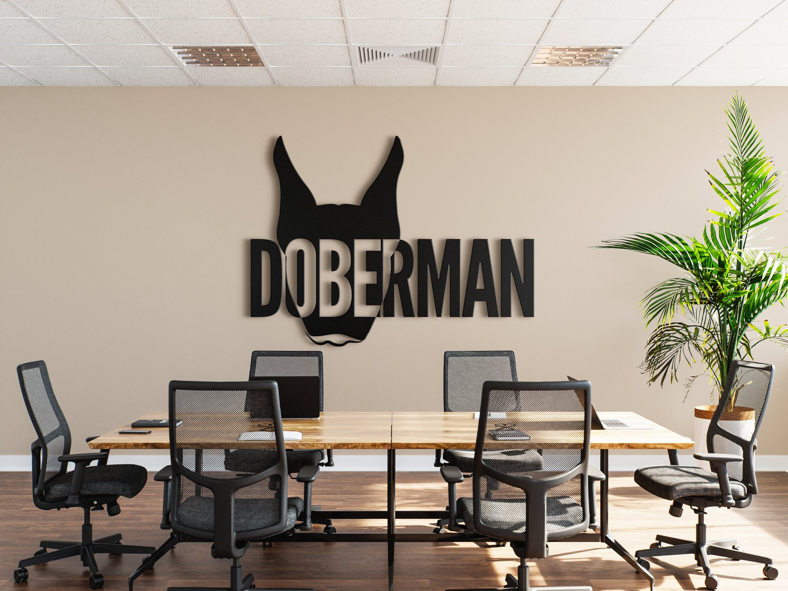
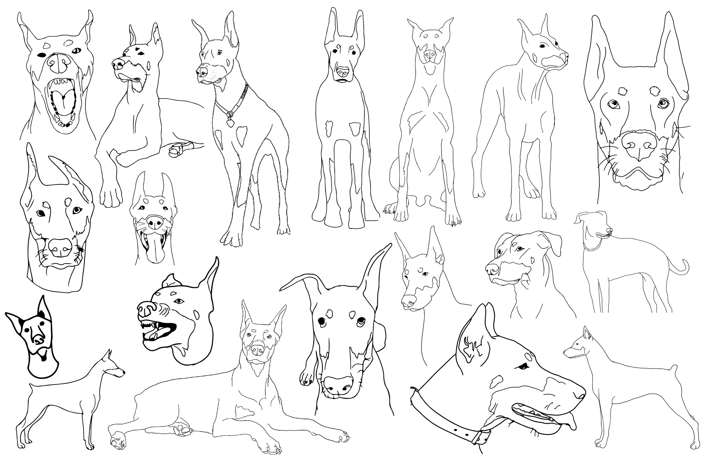
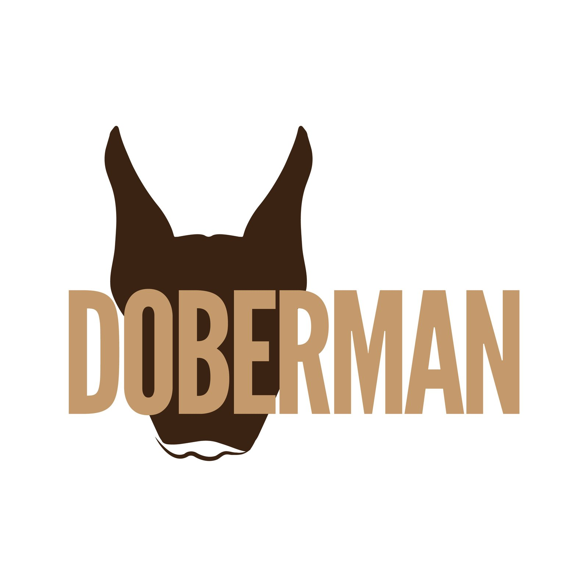
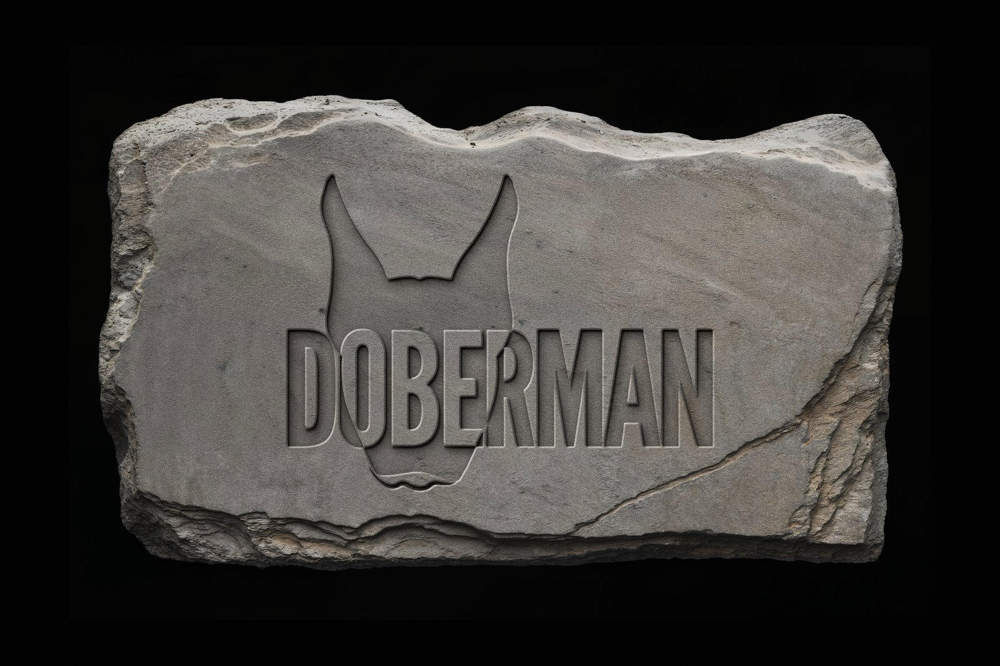

Doberman
Doberman is a combination mark built from the breed's most recognizable features, tested across signage, stationery and product applications.
- Year
- 2024
- Context
- Course project
- Tool
- Illustrator

/ How I made it
I sketched 20 studies of the breed, kept its defining features like the pointed ears, and abstracted them into a face silhouette. Bold, blocky type sits in front of the face to give the mark a sense of strength.



/ Credits
- Context
- Course project, AD 206, Purdue, Spring 2024
- Skills
- Logo designSymbol designTypographyBrand applicationsIllustrator